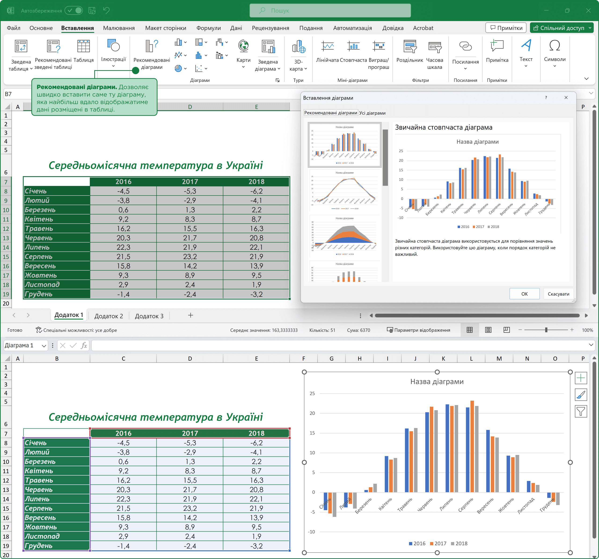
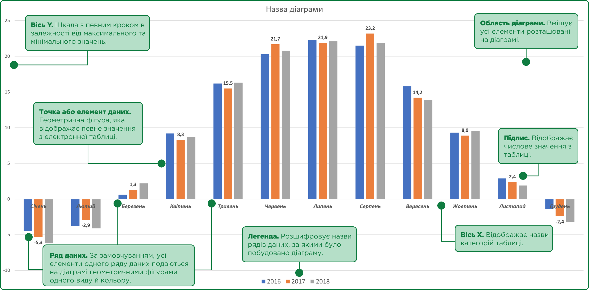
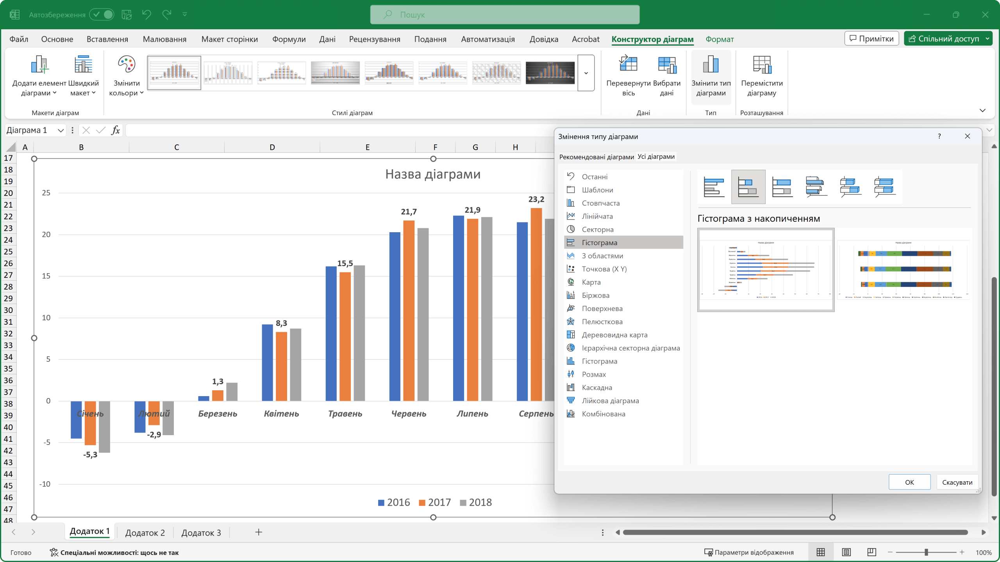
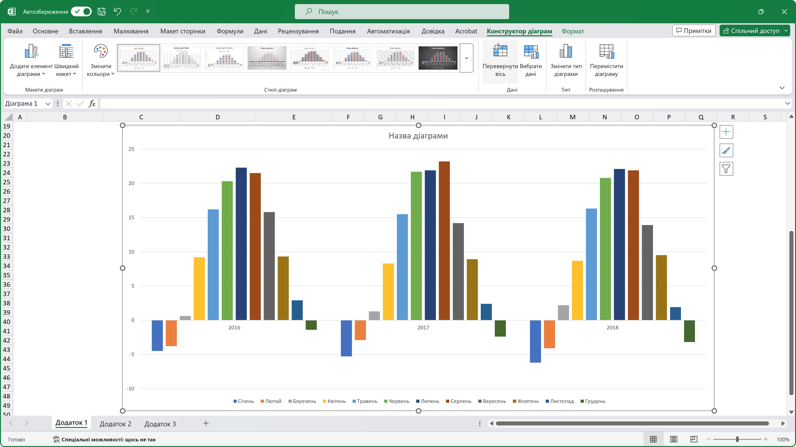
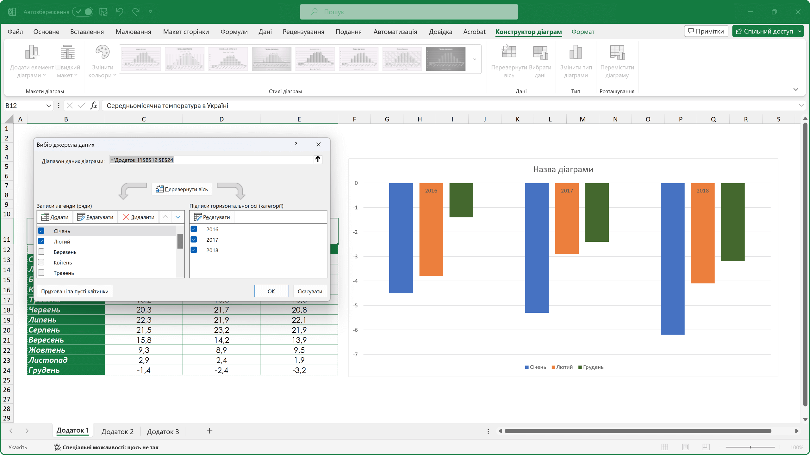
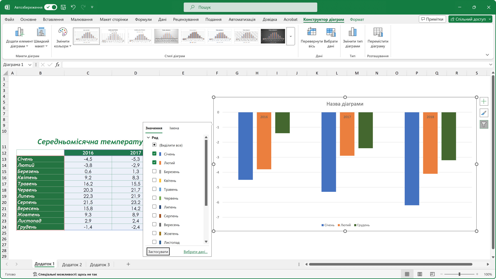
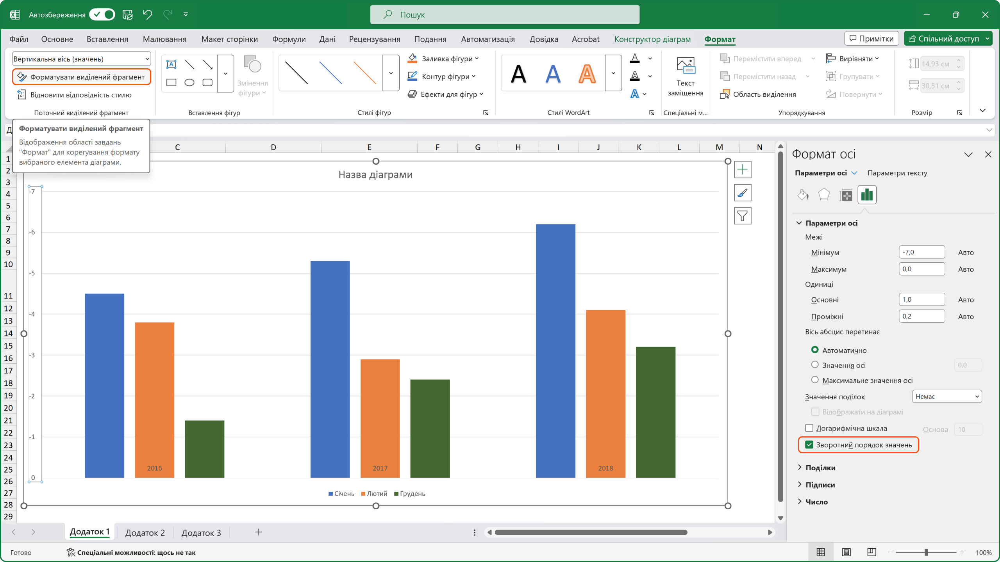
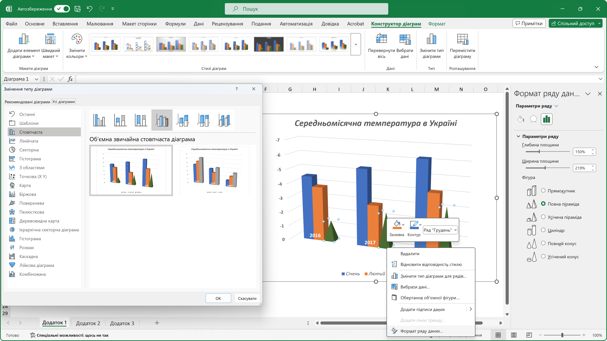
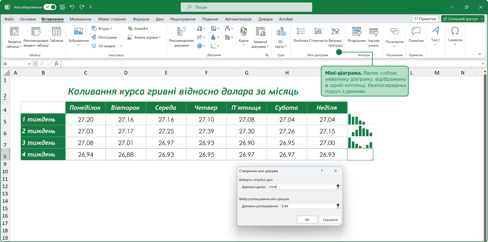
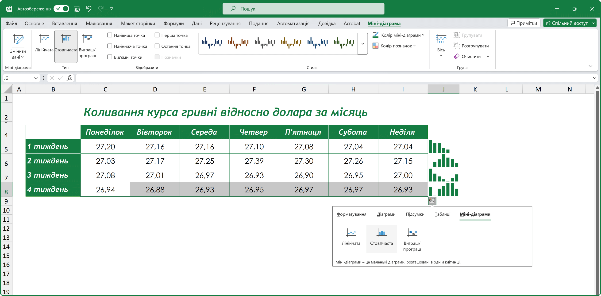

Діаграми та графіки в Microsoft Excel
Для наочного представлення числових даних, які були введені у електронну таблицю, використовують різноманітні шаблони діаграм та графіків.
Діаграма (грец. διαγραμμα – креслення) – це графічне зображення, на якому, за допомоги геометричних фігур, відображене співвідношення між числовими даними.
Вставлення діаграми або графіка в електрону таблицю:
- виділити клітинки з даними, які потрібно представити у графічному вигляді;
- перейти до вкладки Вставлення, у розділі Діаграми обрати команду Рекомендовані діаграми – програма проаналізує вихідні дані та запропонує найвдаліші варіанти діаграм;
- якщо рекомендовані Excel діаграми не підходять, користувач може самостійно обрати тип діаграми перейшовши до вкладки Усі діаграми;
- щоб вставити обрану діаграму потрібно: виділити її, натиснути на кнопку ОК.

Об’єкти діаграм та їх властивості.
Основні об’єкти діаграми:
- область діаграми – містить усі елементи діаграми;
- елемент або точка даних – геометрична фігура, яка відображає на діаграмі певне значення з електронної таблиці;
- ряд даних – набір елементів даних, що пов’язані між собою певним чином;
- підпис – числове значення, яке може мати елемент даних;
- легенда – пояснення до діаграми, де вказані назви рядів даних за якими було побудовано діаграму і відповідні їм кольори;
- головна горизонтальна вісь – вісь Х (категорій), на ній позначаються категорії для кожної одиниці даних;
- головна вертикальна вісь – вісь Y (значень), на ній міститься шкала з певним кроком, що задається автоматично, в залежності від найменшого та найбільшого значень даних, які зображені на діаграмі.

Налаштування діаграм в Excel.
Після того як діаграму було додано, на стрічці команд з’являються дві вкладки Конструктор діаграм та Формат.
Якщо, користувача за деяких причин не влаштовує тип діаграми або його треба замінити, необхідно звернутись у розділі Тип до команди Змінити тип діаграми, у вікні Змінення типу діаграми обираємо потрібний тип діаграми.

Інколи, відображення на діаграмі даних не є достатньо інформативним, наприклад, в нашому випадку, визначити рік, який був більш спекотним, чи більш прохолодним, не так вже і просто. Щоб полегшити сприйняття інформації, перейдемо до розділу Дані, за допомоги команди Повернути вісь міняємо місцями категорії стовпців із категоріями рядків. В такому разі, діаграма буде побудована на основі категорій, що відповідають рокам, і прийме наступний вигляд.

З іншої сторони, для детального аналізу деякої частини даних, користувачу може знадобитись відображати на діаграмі тільки окремі елементи даних.
Виконати це завдання можна декількома способами:
- в розділі Дані, звертаємось до команди Вибрати дані;
- у вікні Вибір джерела даних, в полі Записи легенди або Підписи горизонтальної осі зняти чи поставити галочки навпроти визначених категорій даних;
- також, за допомоги регулюючих кнопок Додати, Редагувати та Видалити можна вказати які саме дані будуть відображені на діаграмі;
- для застосування налаштувань натиснути на кнопку ОК.

- зробити діаграму активною;
- біля її правого або лівого верхнього кута з’являться Керуючі ярлики;
- ярлик зі знаком відповідає за відображення елементів на діаграмі, та дублює команду – Додати елемент діаграми;
- ярлик зі знаком відповідає за Стилі діаграми;
- ярлик зі знаком відповідає за Фільтри діаграми;
- звертаємось до ярлика Фільтр;
- знімаємо або ставимо галочки навпроти визначених категорій даних;
- для підтвердження налаштувань натискаємо на кнопку Застосувати.

Бачимо, напрямок графічних елементів на діаграмі змінився, що в свою чергу теж не додає інформативності. Але напрямок головної вертикальної осі Y можна змінити.
Змінюємо напрямок головної вертикальної осі:
- виділяємо головну вертикальну вісь;
- переходимо на вкладку Формат;
- у розділі Поточний виділений фрагмент клацаємо на команду Форматувати виділений фрагмент;
- в правій частині вікна з’явиться бічне меню Формат осі, де ставимо галочку навпроти команди Зворотній порядок значень.

Викликавши це меню, окрім іншого, користувач може змінювати положення головної горизонтальної осі Х відносно осі Y. Тобто вісь Х можна переміщати вертикально змінюючи початкове значення в якому остання буде перетинати вісь Y, за замовчуванням це значення дорівнює нулю. За переміщення осі Х відповідає перемикач Вісь абсцис перетинає.
Тепер перейдемо до налаштувань самих графічних елементів, Excel дозволяє змінювати не тільки їх оформлення, а й форму.
Змінюємо геометричну фігуру елемента ряду:
- змінити тип діаграми на Об’ємну;
- зробити діаграму активною;
- перейти на вкладку Конструктор діаграм;
- у розділі Тип звернутись до команди Змінити тип діаграми;
- для поточного типу діаграми обираємо Об’ємну діаграму;
- застосовуємо до діаграми обраний стиль;
- виділяємо будь-який ряд даних;
- клацаємо по активному ряду даних правою клавішею миші та обираємо у контекстному меню пункт Формат ряду даних;
- в бічному меню повинен відобразитися розділ Параметри ряду;
- ставимо перемикач навпроти зображення потрібної геометричної фігури, фігура зміниться автоматично.

Міні-діаграми або Sparklines.
Спарклайни – це маленькі діаграми, що вміщуються в одну клітинку. Займаючи мало місця, вони дозволяють продемонструвати тенденцію даних в зрозумілому і компактному графічному вигляді, безпосередньо поруч з даними.
Порядок дій при створенні міні-діаграми:
- виділяємо діапазон клітинок, на основі яких буде створено міні-діаграму;
- переходимо до вкладки Вставлення, у розділі Міні-діаграми обираємо тип спарклайна;
- у вікні Створення міні-діаграм, в полі Діапазон розташування, вказуємо клітинку для виводу міні-діаграми;
- для вставлення міні-діаграми натискаємо на кнопку ОК.

Вставлення міні-діаграми за допомоги Швидкого аналізу:
- виділяємо діапазон клітинок, на основі яких буде створено міні-діаграму;
- у правому нижньому куті останньої клітинки виділеного діапазону з’явиться ярличок швидкого аналізу;
- клацаємо на ярлик та викликаємо допоміжне меню;
- переходимо до розділу міні-діаграми та обираємо потрібну діаграму.

Після цього, в обраній клітинці, з’явиться міні-діаграма, а на стрічці команд додаткова вкладка Міні-діаграми, де зібрані команди, що допоможуть змінити стандартне налаштування міні-діаграми.
Міні-діаграми мають декілька цікавих властивостей:
- в клітинку де знаходиться міні-діаграма можна вводити текст, при цьому сама діаграма буде виступати в якості фону клітинки;
- якщо потрібно створити декілька однотипних міні-діаграм, їх можна додавати у клітинки за допомоги автозаповнення.
Беззаперечною перевагою міні-діаграм є те, що їх на відміну від звичайних діаграм зручно роздрукувати разом із таблицею, з якою вони представлені.